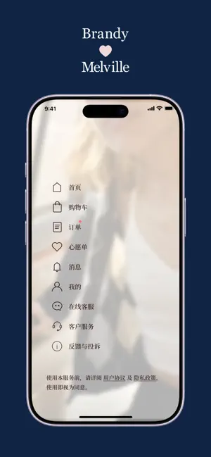

第一次用 Brandy Melville App？这篇带你从零开始把穿搭玩起来
Brandy Melville 作为快时尚领域的独特存在，很多人听说过 BM 风但不知道从哪下手。这篇从安装到搭配到购买，完整带你走一遍。
它到底是干嘛的
想象一下：你手机里有一家只卖一种尺码、主打低饱和温柔色系的线上买手店，每次打开都能看到搭配灵感、新品上新和你收藏过的单品。这就是 Brandy Melville App 给你的感觉。
Brandy Melville 本身是一个源自意大利的服装品牌，2009 年创立，2010 年进入美国市场后迅速在 Z 世代年轻人中走红。它最独特的地方有两个：一是 One Size 策略——大部分单品只有一个尺码，品牌理念是"让更多人轻松驾驭同一件衣服"；二是极简的 SKU——每个品类款式不多，但每款都经过反复打磨，强调百搭性。想了解完整品牌故事和设计理念，可以去Brandy Melville官网看看。
App 就是品牌线上购买的主渠道，目前中国区用户数量已经很大，上海、北京、成都都有线下门店。不过因为门店试衣间陆续取消（目前只剩上海安福路店和香港铜锣湾店保留），越来越多人直接用 App 线上下单。

五分钟上手：从下载到第一次下单
这一节一步步带你走一遍完整流程，跟着做肯定能跑通。
第一步：下载安装
安卓和 iOS 都有官方 App，直接从官方下载拿安装包就行，应用商店搜 Brandy Melville 也能找到，认准带品牌 Logo 的那个就是官方版。安装包不大，几十秒就能装好。
第二步：注册账号
打开 App 后第一次会引导你注册。可以用手机号直接注册，也可以用微信快捷登录（中国区已支持）。注册完完善一下地址信息——下单时直接用，省得每次填。
第三步：第一次逛
首页打开就是信息流。顶部有搜索框和分类入口（上衣、牛仔、外套、配饰几个大分类），中间是运营推荐的搭配组合，往下滑是新品上新流。对新手来说，最简单的逛法就是直接看中间的搭配卡——卡片里会告诉你整套搭配用了哪几件单品，喜欢的点一下就能跳转到单品详情。
你会发现 BM 的单品页面做得很简洁：多张实物图 + 关键测量数据（衣长、肩宽、胸围）+ 模特上身图。测量数据一定要看——因为只有一个尺码，合不合身全看这些数字。

第四步：下单
喜欢的单品点"加入购物袋"。BM 的购物袋数量显示在右下角的小图标上。结算是微信支付或支付宝，和国内其他购物 App 一样简单。下单后可以在「我的 → 我的订单」里看物流状态。
这就是完整流程——从打开 App 到下单成功，五分钟绝对够。
上手后先玩这三个功能
第一次下单成功后，你可能还想多了解一点。这里有三个功能是新手最值得先碰的。
搭配灵感（首页卡片）
你会发现首页中间的搭配卡不是随便放的——每张卡都经过搭配师精心组合。BM 风的底层逻辑其实很简单：上短下高、紧松平衡、全身主色不超过两种。这些搭配卡就是把这套逻辑具象化给你看——不需要自己瞎琢磨，跟着买就行。更完整的搭配公式拆解和单品详解可以在Brandy Melville文档里找到。
这意味着什么？对于完全不会搭配的小白来说，直接照着搭配卡下单，买回来的单品 100% 能互相搭配，不会出现"买了这件发现和家里都搭不上"的尴尬。
收藏夹（心愿单）
看到喜欢但暂时不想买的单品，点一下图片下方的小心心，就存到心愿单里了。BM 的心愿单有个实用的小细节：会自动标记心愿单里哪些单品降价了——打开心愿单一眼就能看到，不用自己逐个翻。
这意味着什么？新手不确定要不要买的单品可以先收藏放一放，既能随时回看，又能等到合适价格再出手，比冲动下单稳妥得多。
通知提醒
在「我的 → 设置 → 通知」里打开新品提醒和降价提醒。BM 每周都有新品上新（通常是周四），关注了你喜欢的品类后，上新当天会推通知告诉你。
这意味着什么？热门款（比如碎花吊带、格纹衬衫）经常上新当天就断码——因为只有一个尺码，库存没了就没了。开着通知至少不会错过你一直在等的那件。
小白最常问的三个问题
这三个问题从社区讨论和文档 FAQ 里提炼出来，也是新手最容易踩坑的地方。
Q1：只有一个尺码，我穿得上吗？
BM 的单品确实只有 One Size，但并不是完全没有弹性。大部分上衣是修身或微宽松版型，弹力面料有一定拉伸空间；牛仔裤低腰设计，胯部有富余。官方会在单品页面提供关键测量数据（衣长、胸围、肩宽、内缝长），对照自己的身体数据选就不会错。
身材偏丰满的朋友建议从"内搭 + 外搭"的公式入手——紧身内搭配宽松外搭（比如 Oversize 卫衣或牛仔外套），既能遮盖手臂和腰腹，又能穿出层次感。身高不到 160cm 的朋友注意裤长选内缝长 75-80cm 的款式，避免拖地。
Q2：退换货方便吗？
说实话，BM 的退换货政策比大多数快时尚品牌要严格。线上 App 下单的话是 30 天内可退，但配饰、泳装、珠宝、折扣商品属于"最终销售"，不退不换——这一点购买前一定要确认。
北京、成都的门店 2024 年后甚至取消了现金退款，只退代金券。如果你对尺码没把握，建议优先选上衣和牛仔品类（可退），谨慎购买配饰类。上海安福路店和香港铜锣湾店目前还保留现金退款，就近的话可以先去门店看实物再决定。
Q3：门店还是 App 买？
各有优势。门店的好处是可以直接看实物、感受面料——尤其是牛仔的版型和厚度，照片里看不出来。但目前国内只剩上海和香港的门店有试衣间，北京成都的门店无法试穿。
App 的好处是货品全、价格透明、可以随时看搭配卡。很多热门款线上有货门店不一定有。最实用的做法是先在 App 里收藏喜欢的单品，有空去门店看实物确认，满意再线上或线下买。
写在最后
Brandy Melville 的 App 设计走的是极简路线——没有乱七八糟的弹窗，分类清晰，单品信息直观。对于想尝试 BM 风但又怕踩坑的新手来说，从首页搭配卡入手是最稳的路径。
进阶方向建议先研究一下 BM 的五个基础搭配公式：短上衣 + 高腰裤、紧身内搭 + 宽松外搭、一件印花 + 全身上下单色、同色系穿搭、叠戴配饰——这些在中文文档里都有详细拆解。掌握之后，你会发现 BM 的单品虽然只有一个尺码，但组合起来的可能性比想象中多得多。整理好的资料在 GitHub、Gitee 和 GitCode 都能拿到，选哪个顺手就用哪个。